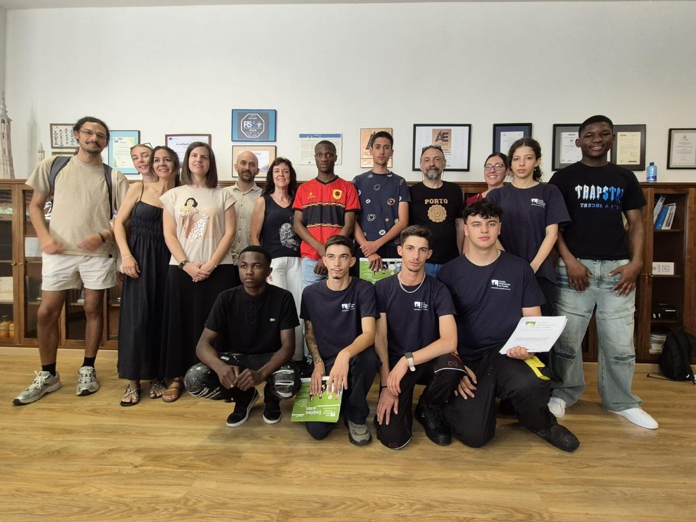

Chegada a Espanha
A viagem do Fundão até Zaragoza foi longa e cansativa. No primeiro dia, tivemos tempo para descansar e recuperar das horas de deslocação — uma atenção da organização que nos permitiu chegar ao segundo dia com energia. Foi então que vivemos a verdadeira receção: encontro com colegas, parceiros e tutores, e o primeiro contacto oficial com o ambiente que nos acompanhou durante todo o estágio.
25.06.2026 · Segundo dia · Zaragoza, Espanha